已有增材制造基础
- 3D打印技术
- 多尺度结构制备
- 器件测试与系统集成
基于工程实践与环境特征的科学需求
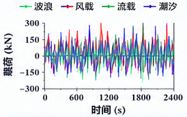
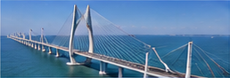
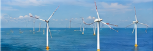
浙江舟岱大桥南通航孔桥
普陀6号海上风电场
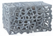
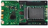
摩擦纳米超材料
传感器
数据采集
（单片机）
无线传输
（4G/5G/北斗）
服务器
（云平台）
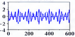
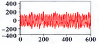
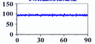
已有研究成果为本项目科学问题的深入研究提供坚实基础
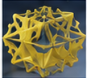
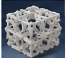
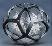
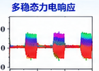
折纸超材料
点阵超材料
胶囊结构器件
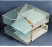
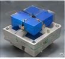
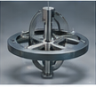
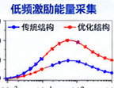
板状超材料
双侧约束滑块
陀螺结构
Equivalent Current Model
多物理场数值模拟
AI逆向设计优化
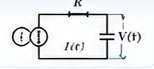
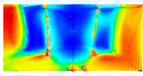
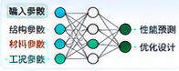
◆ 构建摩擦电/压电耦合等效模拟方法 ◆ 发展物理信息驱动的AI逆向设计技术
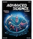
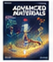
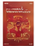
Nano Energy
IF 16.7
JCR Q1
Advanced
Science
IF 14.1
JCR Q1
Advanced
Materials
IF 29.1
JCR Q1
Progress in
Materials Science
IF 42.9
JCR Q1
...
已有制备、测试与系统集成基础为本项目提供保障
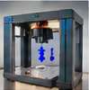
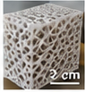
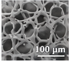
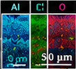
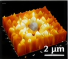
3D打印制备
微观结构
微观形貌（SEM）
元素分布（EDS）
表面形貌（AFM）
力学加载平台
多通道同步采集
环境适应性测试
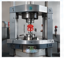
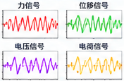
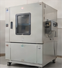
温度循环
（-20~70°C）
盐雾腐蚀
长期疲劳
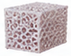
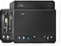
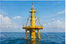
传感器器件
信号采集
无线通信
数据平台
工程示范